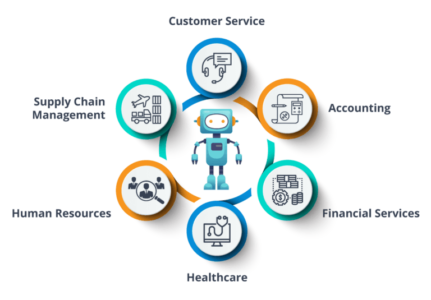

What is Artificial Intelligence?
Artificial Intelligence (AI) is the development of computer systems that can mimic human intelligence by performing tasks like understanding language, recognizing patterns, making decisions, and learning from data. There are two main types: Narrow AI, which is specialized for specific tasks (e.g., voice assistants), and General AI (AGI), a theoretical form with human-like intelligence. AI technologies, including machine learning and deep learning, are being applied across various industries, promising efficiency and innovation, but they also raise important ethical and societal concerns such as privacy and bias.
Click here to know moreCertainly! In the field of Artificial Intelligence (AI), a diverse set of technologies and techniques play crucial roles in enabling machines to perform intelligent tasks.
1. Machine Learning (ML): ML algorithms empower systems to learn from data, making predictions or decisions without explicit programming. This allows AI systems to improve their performance over time through experience.
2. Deep Learning: A subset of ML, deep learning employs artificial neural networks to model intricate patterns and representations in data. It is often used for tasks like image and speech recognition, natural language understanding, and autonomous driving.
3. Natural Language Processing (NLP): NLP focuses on teaching computers to comprehend and interact with human language. It's essential for applications such as language translation, chatbots, and sentiment analysis.
4. Computer Vision: This technology equips machines with the ability to understand and interpret visual information from the world, enabling tasks like facial recognition, object detection, and self-driving cars.
 Click here to know more1. Automation: AI enables the automation of repetitive and mundane tasks, freeing up human workers to
focus on more creative, strategic, and value-added activities. This can lead to increased productivity
and efficiency across various industries.
2. Data Analysis: AI has the ability to analyze vast amounts of data quickly and accurately. This is
crucial for making data-driven decisions, detecting patterns, and deriving insights from data that would
be practically impossible for humans to process manually.
3. Personalization: AI can tailor experiences and services to individual preferences, leading to
more personalized recommendations in fields like e-commerce, content streaming, and healthcare. This
enhances customer satisfaction and engagement.
4. Problem Solving: AI can tackle complex problems that involve large datasets and intricate
patterns, such as climate modeling, drug discovery, and optimization of supply chains.
5. Predictive Capabilities: AI can forecast future trends and outcomes based on historical data,
which is valuable in financial markets, weather forecasting, and demand forecasting for businesses.
1. Define Objectives and Scope:
Clearly define the problem you want to solve or the task you want AI to perform.
Determine the scope of the project, including the data sources and constraints.
Data Collection and Preparation:
Gather relevant data required for your AI project. High-quality, diverse data is often crucial.
Preprocess and clean the data, addressing missing values, outliers, and inconsistencies.
2. Select Appropriate AI Techniques:
Choose the AI techniques that best match your objectives. Common techniques include machine learning,
deep learning, natural language processing, and computer vision.
Decide whether pre-built AI models or custom model development is more suitable for your needs.
3. Feature Engineering:
Identify and engineer relevant features (input variables) from your data that will help AI models make
accurate predictions or decisions.
4. Model Development:
Develop and train AI models using the selected techniques and your prepared data.
Fine-tune and optimize model parameters to improve performance.
 Click here to know more
Click here to know more